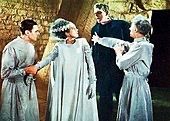
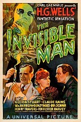

James Whale (22 July 1889 – 29 May 1957)
Whale was an English film director, theatre director and actor,
who spent the greater part of his career in Hollywood. He is best remembered for several horror films.
a 1931 American science fiction horror film, produced by Carl Laemmle jr Wiki page"

a 1931 American science fiction horror film, produced by Carl Laemmle jr Wiki page"

a 1933 American science fiction horror film, produced by Carl Laemmle jr Wiki page"
